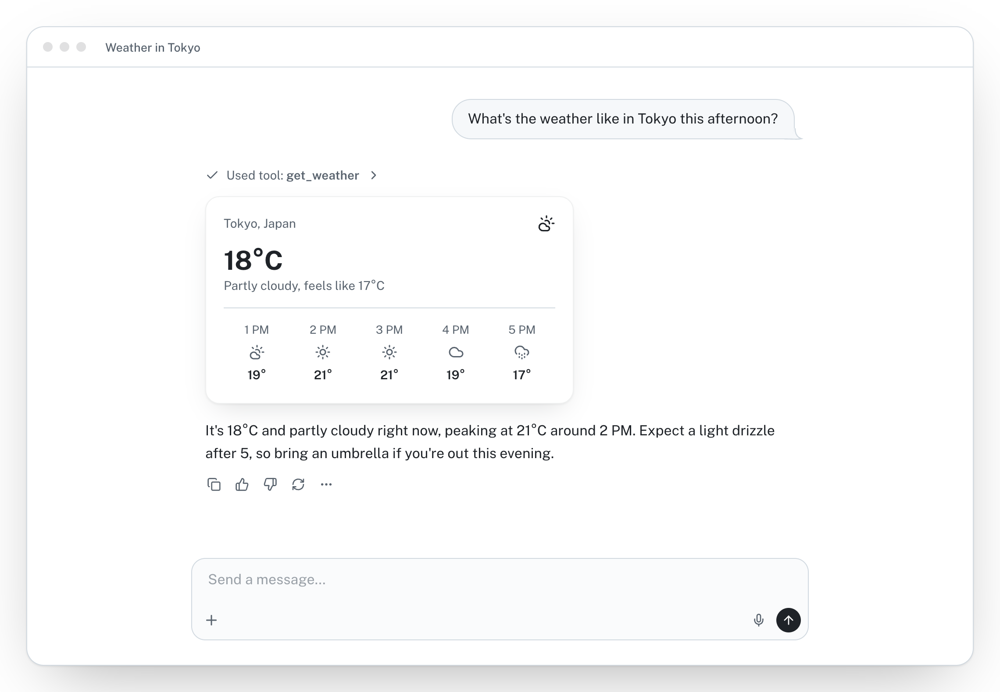
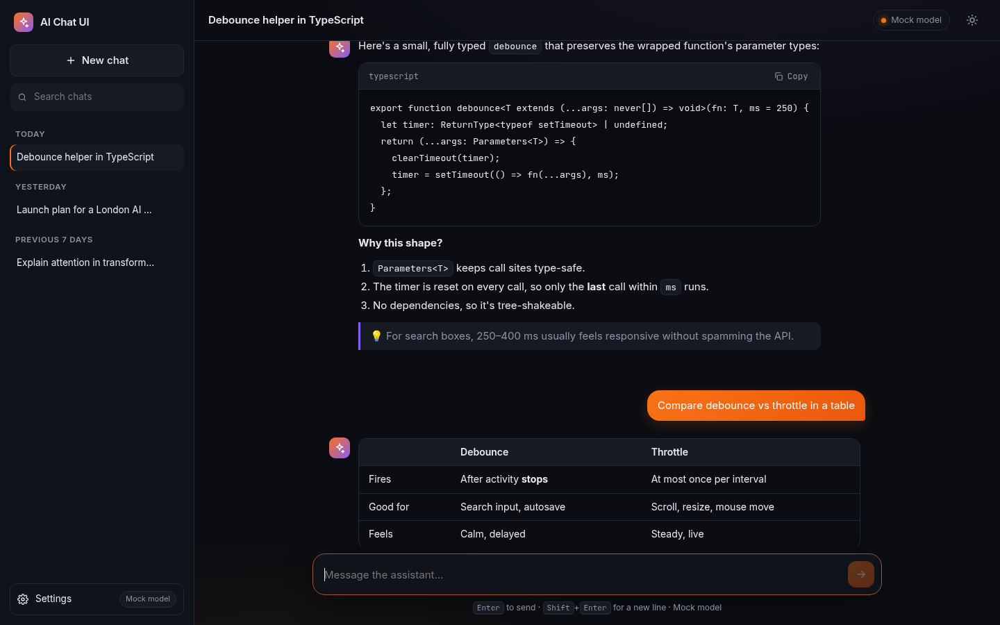
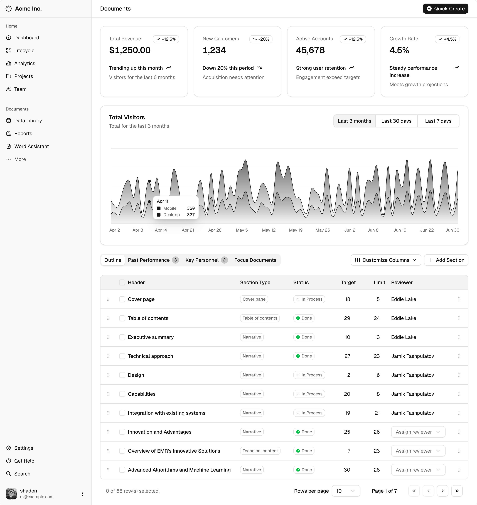
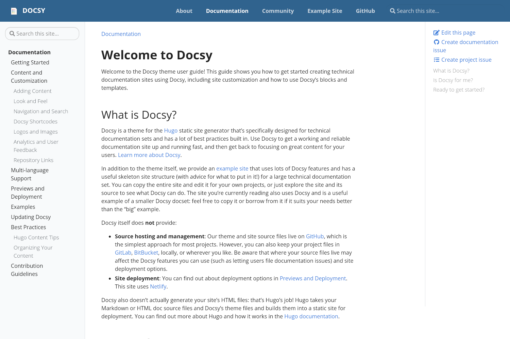
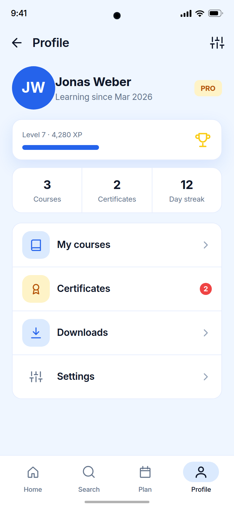
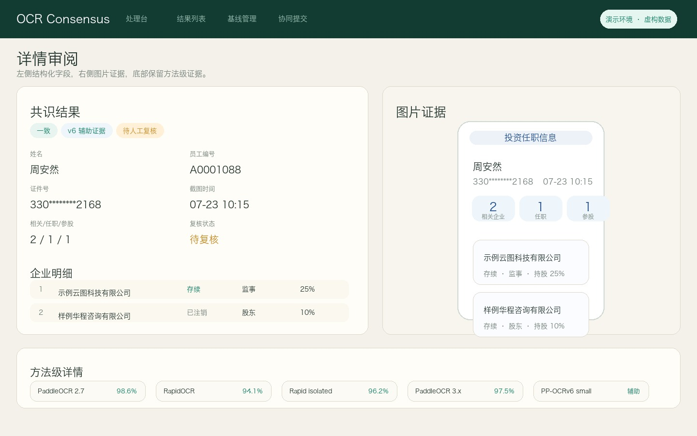

首頁 · H-01
Nextcloud Dashboard · 原作完整桌面畫面
封存來源：reference12 · aef3f516；原圖未改

選配工作台 / page-compare03 / 私有靜態草稿
先看完整原圖，再告訴我頁面和編號。只比較整頁，不拼接零件、不替換原版。
22 張原圖、2 個原生完整頁單案，共 19 個分組。完整保留 compare02；本版只加入從既有精確備份取回的 CD01-01 孩子基本資料原生單案。它不是 C-03 Dashboard，也不是同功能第二方案。保留原 5 組同類非功能等效雙圖與 6 個不同用途／裝置單案，不用不同頁湊數。窄屏按原順序上下排列。
原有內容與說明沿用 compare02；CD01 從固定備份 dfc1434b 取回原檔，不重新渲染或設計。此 compare03 版本未執行 browser、手機或讀屏驗收，也不是育伴港產品前端。原有驗收文字只描述各來源版本，不能當成新入口／返回已驗。圖內按鈕不可操作；C-03 與 CD01 各自開啟獨立原生文件，不嵌入或拼接。看完使用瀏覽器返回。
不保存選擇、不同步資料。你可在對話直接寫「設定 S-02」等編號；收到選號前不自動實作。
原圖＋未收錄狀態
Nextcloud Dashboard · 原作完整桌面畫面
封存來源：reference12 · aef3f516；原圖未改
同類頁面雙原圖對照；不是產品功能等效聲明
assistant-ui · Weather in Tokyo 原作示例
封存來源：reference12 · aef3f516；原圖未改

AI Chat UI · demo 對話完整視窗原圖
封存來源：reference12 · aef3f516；原圖未改

這是完整視窗，不是整段可捲動長對話。1440 × 900 原圖的側欄、標題、對話區及輸入列完整保留；範例最初的提問和最後的補充文字在畫面外，未補畫或推定所有訊息都已顯示。
相關參考，單獨列案；不是同頁，不湊成第二方案
Baby Buddy Timeline · 原作桌面視窗
相關參考 · 全照顧時間線；分開單列：桌面全照顧事件時間線；C-02 是睡眠／哭聲節律，不是同頁。
封存來源：reference12 · aef3f516；原圖未改

相關參考，單獨列案；不是同頁，不湊成第二方案
Baby Monitor for Home Assistant · Rhythm 原作桌面視窗
相關參考 · 睡眠／哭聲節律；分開單列：桌面睡眠／哭聲節律；C-01 是全照顧時間線，不是同頁。
封存來源：reference12 · aef3f516；原圖未改

原圖底部事件行本已截斷。此處完整保留 1280 × 720 原始視窗，沒有新增裁切；不是整個可捲動 Rhythm 頁面，不補畫或推定畫面以外的內容。
同版官方 README 第 29–30 行明確說明截圖採合成示例，不含真實兒童、攝像頭或 Home Assistant 憑證。這是本圖的具體合成證據，不是只因圖片公開或名稱普通便推定；沒有加入任何實際家庭資料。
相關參考，單獨列案；不是同頁，不湊成第二方案
shadcn/ui · Settings / Appearance 原作畫面
相關參考 · 個人外觀；分開單列：桌面個人外觀設定；S-02 是管理員系統設定，不是同頁或同角色。
封存來源：reference12 · aef3f516；原圖未改

相關參考，單獨列案；不是同頁，不湊成第二方案
TokenHub · System Settings 原作桌面截圖
相關參考 · 管理員系統；分開單列：桌面管理員系統設定；S-01 是個人外觀設定，不是同頁或同角色。
封存來源：reference12 · aef3f516；原圖未改

同類頁面雙原圖對照；不是產品功能等效聲明
Trilium Notes · Trilium Demo 原作桌面視窗
封存來源：reference12 · aef3f516；原圖未改

SilverBullet · Photo Walk 公開教學筆記原圖
封存來源：reference12 · aef3f516；原圖未改

相關參考，單獨列案；不是同頁，不湊成第二方案
Super Productivity · Today 淺色手機原作畫面
相關參考 · Today 待辦；分開單列：手機 Today 待辦；TK03 是桌面 Shopping List，裝置與用途不同，不是同頁。
封存來源：reference12 · aef3f516；原圖未改

相關參考，單獨列案；不是同頁，不湊成第二方案
Errands · Shopping List 原作完整桌面視窗
相關參考 · Shopping List；分開單列：桌面 Shopping List；TK02 是手機 Today 待辦，裝置與用途不同，不是同頁。
封存來源：reference12 · aef3f516；原圖未改

原圖＋未收錄狀態
Bootstrap Sign-in · 完整官方預覽縮圖
封存來源：reference12 · aef3f516；原圖未改

目前只有一案，不與其他用途湊對
shadcn/ui Dashboard · 一般業務成長／進度原圖
這不是育兒頁，也不是兒童成長紀錄介面。原商業指標、表格與文案完整保留，只供整頁構圖與層級比較，不代表建議搬入育伴港或混合拼配。
封存來源：reference12 · aef3f516；原圖未改

同類頁面雙原圖對照；不是產品功能等效聲明
Nextcloud All activities · 官方合成示例原圖
封存來源：reference12 · aef3f516；原圖未改

完整視窗，不是全部歷史的長截圖。1280 × 720 原圖的頂欄、側欄、Today 事件及底部最後一項 welcome.txt 完整保留，沒有新增裁切、補畫、翻譯或拼配；原圖以外的活動沒有被驗證。
iCloud Mailflow 0.12.2 · Activity Log 完整頁視口
封存來源：reference12 · aef3f516；原圖未改

這是完整頁視口，不是整頁長圖，也不是育兒頁。可與 HIS01 的活動流比較表格／篩選構圖，不自動採用郵件欄位、品牌或刪除流程。
同類頁面雙原圖對照；不是產品功能等效聲明
Hugo Book · 官方 Introduction 完整桌面原圖
封存來源：reference12 · aef3f516；原圖未改

這是真實 Hugo Book 專案的公開自我說明，不是育兒建議、私人家庭資料或全部虛構文章。完整保留左側搜尋／選單、中央 Introduction、右側目錄、日期／編輯／下一頁導覽及頁尾；沒有替換成育伴港內容或混合拼配。
Docsy · Welcome to Docsy 官方歷史 theme-gallery 原圖
封存來源：reference12 · aef3f516；原圖未改

這是完整原始視窗，不是整個長頁，而且沒有頁尾。只見 Welcome to Docsy 與第一大節；未顯示其餘文章或 footer，沒有補畫、裁切、翻譯、換色或改成新介面。
目前只有一案，不與其他用途湊對
Flowscope / Bright · Profile 原創虛構示例
封存來源：reference12 · aef3f516；原圖未改

這是一般學習檔案，非兒童資料、健康或育兒紀錄頁。原作的虛構姓名、JW 字母頭像、學習起始、等級／XP、統計、四個選單項目及底部導覽完整保留，不把學習指標改稱兒童成長資料。
目前只有一案，不與其他用途湊對
Flowscope / Noted · Profile 原創虛構設計範例
封存來源：reference12 · aef3f516；原圖未改

這是一般生產力檔案，不是兒童資料、學習、健康或育兒紀錄頁。與 PF01 一般學習檔案可比較整頁構圖，但用途不同，不算第二個學習檔案方案。原作的 JW 字母頭像、姓名／職業、方案／連續日數、任務統計、四個選單及底部導覽均保留。
同類頁面雙原圖對照；不是產品功能等效聲明
SuperLocalMemory V2 · Memories 官方原始視窗
封存來源：reference12 · aef3f516；原圖未改

這是知識記憶管理／知識資料庫列表，不是引文、書目或學術引用管理工具。原圖底部原有視窗截斷保留；完整 3840 × 2160 原始圖片不代表展示全部 30 筆記憶或整個長頁。沒有補畫、裁切、改文案或拼配。
Hermes LanceDB Memory Suite · Memories 原作完整視口
封存來源：reference12 · aef3f516；原圖未改

可與 SRC01 比較完整記憶列表構圖。此為軟體／專案知識資料庫，不是兒童資料、學術引文或書目管理。
單案原圖參考 · 不是育兒功能，不與不同用途頁面湊雙案
精確公開來源備份：bf7e129d9474ed2dc76fe8179bf1e6160f485d28；本包原圖及兩份權利說明與已讀回 bytes 相同。

固定來源為 godtroop-github/ocr_consensus 的 docs/assets/detail-review.jpg。source commit 識別倉庫圖片，不是 capture build 證明；capture build／time 未知。固定 README 明示虛構演示資料，圖上亦保留演示標示；這是作者聲明，不是獨立重建 fixture 生成鏈，圖中資料不作真實聯絡或身份依據。
MIT 的 software and associated documentation files 為引用依據；不是另行圖片專用協議或全面第三方權利清查。品牌只識別來源，不代表背書。
單案原生完整頁參考 · 不是照顧記錄列表，也不是 CD01 孩子詳細頁
精確公開來源備份：59a16b8edf6c9d5d257b01885a6dd9860d73fd90；完整 24 檔展示目錄與已讀回 bytes 相同。
保留原模板九張概況卡、原排序／主題／圖示與全新固定合成 fixture。不是原始截圖，不是照顧時間線或孩子詳細資料頁，不把它與 C-01、C-02、CD01 當成同頁第二方案。
開啟 C-03-01 原生完整 Dashboard 頁。同一分頁開啟；看完使用瀏覽器返回。這是獨立原文件，不是圖片，不嵌入目前比較頁。原頁會執行既有本地選單／Bootstrap 腳本，原 CSP 與停用跨頁邊界保持原樣；沒有新增保存、帳戶、模型或資料服務。
固定原模板 dashboard/templates/dashboard/child.html；不是 core/templates/core/child_detail.html。保留來源模板結構，但現代 Django／LibSass 與合成 fixture 的適配不等於歷史工具鏈逐像素重現。原歷史截圖的個資來源未獨立建立，因此沒有收錄該截圖或轉錄其人物數值。
Baby Buddy BSD-2-Clause；Bootstrap／jQuery／Popper MIT；Font Awesome 字體 OFL、樣式 MIT、原文件 CC BY 3.0 分類保留。完整 notices 與 fixture、來源 manifest 置於同一目錄。歷史依賴只供隔離來源參考，不推薦直接作生產依賴，也不代表品牌或作者背書。
單案原生完整頁參考 · 不是 C-03 Dashboard，也不是同功能第二方案
Baby Buddy package 0.1.0；固定上游 f02f28b7f96f8bb1b9a0212a377c327ce33e7699。精確公開來源備份 dfc1434b1e1aae2ea0cac814e1cc6329fccffca6；完整 24 檔與既有 QA freeze 的 bytes 完全相同。
這是孩子姓名、出生日期、年齡及原 Dashboard／Reports／Edit／Delete 圖示入口的完整 Child Detail 原模板頁，沒有加健康欄位、卡片或替代目的頁。Reports 保留原五項清單。它與 C-03 九卡概況、照顧時間線、一般學習／生產力檔案是不同頁，不配成第二方案。
開啟 CD01-01 原生完整 Child Detail 頁。同一分頁開啟，使用瀏覽器返回索引。這是僅本地來源參考，不是已採納、已公開的育伴港帳戶／兒童資料功能。保留原頁本地腳本與原 CSP，不嵌入目前索引，不新增功能或資料。
原模板 core/templates/core/child_detail.html；姓名 First Last／slug first-last 與同日出生規則取自同版 ChildTestCase.test_child_create。固定 2017-10-28 UTC 午夜，因此原 timesince 顯示 Age 0 minutes。caregiver、空 timers 與展示權限是明示的合成 fixture，不是真家庭或帳戶權限；沒有轉錄 C-03 截圖或加入照片。
Baby Buddy BSD-2-Clause 全文與上游 LICENSE 相同；Bootstrap／jQuery／Popper MIT，Font Awesome 字體 OFL、樣式 MIT、原文件 CC BY 3.0 分類與全文保留。原版歷史依賴只供來源參考，不推薦當生產依賴。Django 5.2.8／LibSass 0.23.0 的既有渲染與原工具鏈不同；此輪只取回原 bytes，沒有重跑 renderer，不宣稱原歷史截圖像素一致。
原作者期 browser_verified=false 及未發布欄位原封不動。後續既有 1180×757 桌面結果包括完整導覽／基本資料／四個圖示、Reports 五項 pointer／Enter／Escape、部分停用入口普通點擊保持原頁。靜態來源獨審保留為後製結果摘要，不是當時另行封存的原始審查檔；這輪確認摘要、QA freeze 與已取回檔案的連結，不重新宣稱完整獨審或 browser 通過。
compare02 原內容保留；本版 CD01 已從既有精確 GitHub 備份唯讀取回並列為單案。以下仍只留狀態，不搬入私有載荷、不建立不可用的本地入口。這是 2026-11-12 的有界快照，不是持續更新服務，也不擴張公開資料範圍。